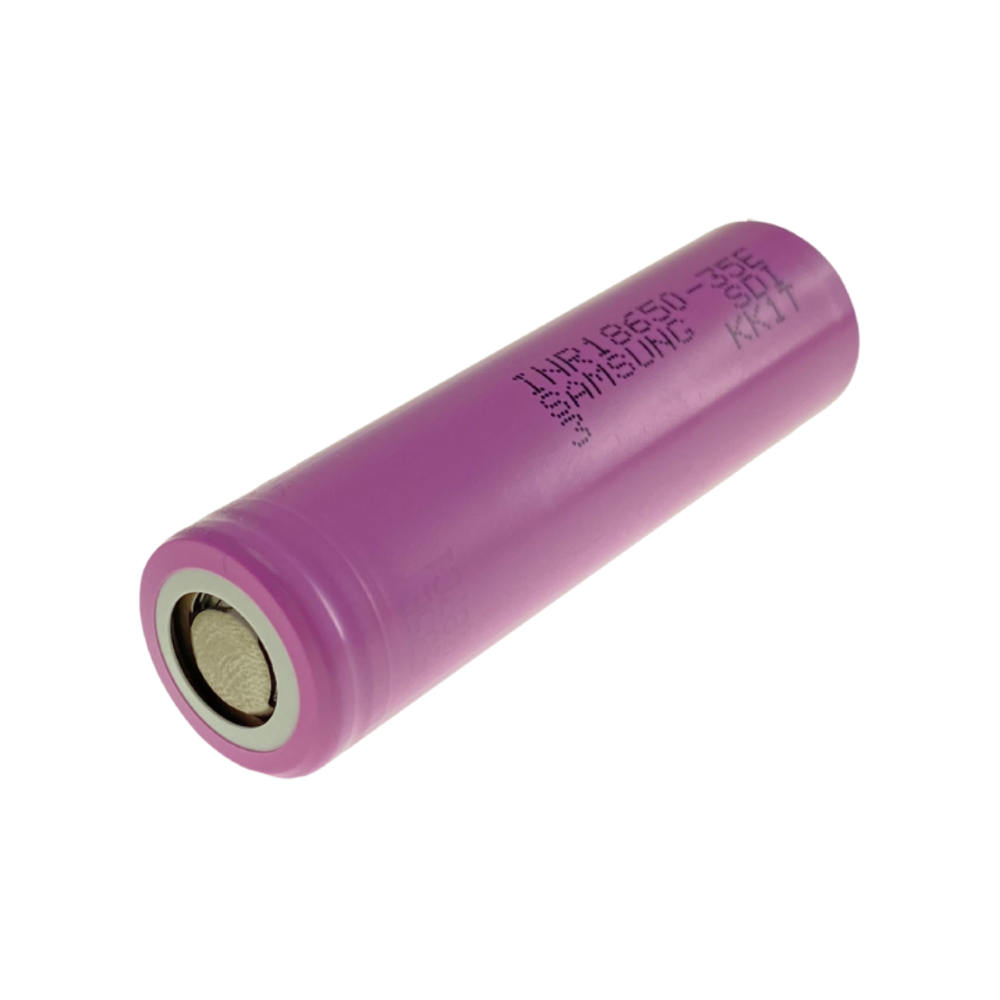
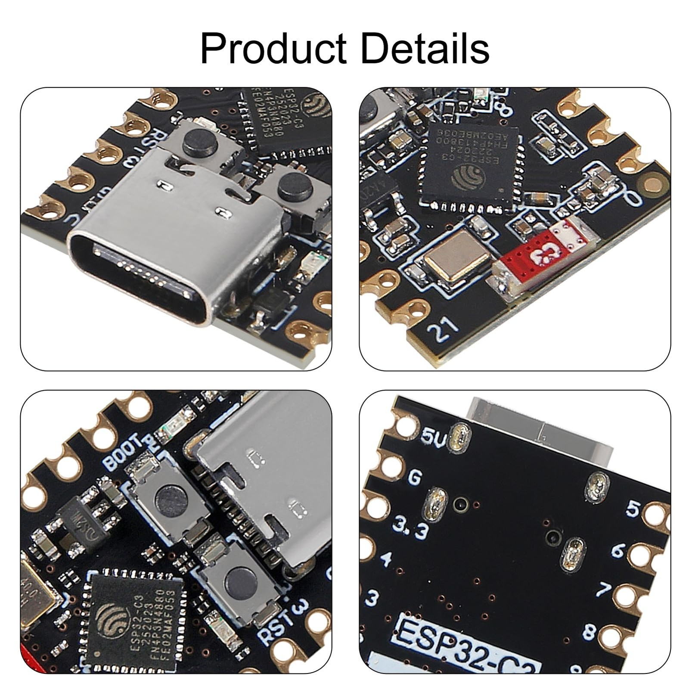

WIRING MOCHI DASAI — TANPA BREADBOARD
Foto modul asli + pinout asli. Ikuti nomor/warna: pin modul → tujuan di ESP32 / power. Cek lagi silkscreen PCB-mu sebelum menyolder.
① TP4056 + Li-ion (modul cas)

Pin → tujuan
IN+ ← USB 5V
IN- ← GND
B+ ← baterai +
B- ← baterai −
OUT+ → boost IN+
OUT- → GND
CHRG → GPIO2
IN+ ← USB 5V
IN- ← GND
B+ ← baterai +
B- ← baterai −
OUT+ → boost IN+
OUT- → GND
CHRG → GPIO2
CHRG = pin LED merah, aktif LOW. Kabel langsung, tanpa breadboard.
② Baterai Li-ion 1 sel (3,7 V)

Pin → tujuan
+ → TP4056 B+
+ → 100k → GPIO1
− → B- / GND
+ → TP4056 B+
+ → 100k → GPIO1
− → B- / GND
Jangan sambung baterai langsung ke ESP32.
③ Boost MT3608 — set 5,0 V

Pin → tujuan
IN+ ← TP4056 OUT+
IN- ← GND
OUT+ → sakelar IN
OUT- ← GND
IN+ ← TP4056 OUT+
IN- ← GND
OUT+ → sakelar IN
OUT- ← GND
Ukur OUT+ ke OUT- = 5,0 V dulu, baru sambung ke ESP32.
④ Sakelar ON/OFF (seri di +5V)

Pin → tujuan
IN ← boost OUT+
OUT → ESP32 5V
IN ← boost OUT+
OUT → ESP32 5V
GND tidak lewat sakelar — GND langsung disatukan.
⑤ Pembagi baterai 100k / 100k
Baterai + → 100k → GPIO1 (ADC) → 100k → GND
Titik tengah pembagi → ESP32 GPIO1
Kaki bawah pembagi → GND bersama
Titik tengah pembagi → ESP32 GPIO1
Kaki bawah pembagi → GND bersama
Rasio 2:1. GPIO1 membaca setengah tegangan baterai.
⑥ ESP32-C3 Super Mini (USB-C = COM8)

PIN YANG DIPAKAI
5V ← sakelar OUT
GND ← GND bersama
3V3 → OLED/GPS/TTP
GPIO1 ← ADC baterai
GPIO2 ← CHRG
GPIO3 ← TTP OUT
GPIO4 ← GPS TX
GPIO5 → GPS RX
GPIO20 → OLED SDA
GPIO21 → OLED SCL
5V ← sakelar OUT
GND ← GND bersama
3V3 → OLED/GPS/TTP
GPIO1 ← ADC baterai
GPIO2 ← CHRG
GPIO3 ← TTP OUT
GPIO4 ← GPS TX
GPIO5 → GPS RX
GPIO20 → OLED SDA
GPIO21 → OLED SCL
Letak pin dari USB-C di atas:
Sisi kiri: 5V · GND · 3V3 · 4 · 3 · 2 · 1 · 0
Sisi kanan: 5 · 6 · 7 · 8 · 9 · 10 · 20 · 21
Lihat juga pinout asli di halaman 2. GPIO20/21 dipakai sebagai I2C karena UART0 tidak dipakai untuk log (log lewat USB-C).
Sisi kiri: 5V · GND · 3V3 · 4 · 3 · 2 · 1 · 0
Sisi kanan: 5 · 6 · 7 · 8 · 9 · 10 · 20 · 21
Lihat juga pinout asli di halaman 2. GPIO20/21 dipakai sebagai I2C karena UART0 tidak dipakai untuk log (log lewat USB-C).
⑦ OLED 1,3" SH1106 — alamat 0x3C

Pin → tujuan
VCC ← ESP32 3V3
GND ← GND bersama
SCL ← ESP32 GPIO21
SDA ← ESP32 GPIO20
VCC ← ESP32 3V3
GND ← GND bersama
SCL ← ESP32 GPIO21
SDA ← ESP32 GPIO20
Urutan pin umum: VCC · GND · SCL · SDA. Cek tulisan di PCB-mu.
⑧ GPS NEO-6M / ATGM336H (9600 baud)

Pin → tujuan
VCC ← ESP32 3V3
GND ← GND bersama
TX → ESP32 GPIO4
RX ← ESP32 GPIO5
VCC ← ESP32 3V3
GND ← GND bersama
TX → ESP32 GPIO4
RX ← ESP32 GPIO5
TX modul masuk ke RX ESP32 (GPIO4). GPS jangan dikasih 5V.
⑨ TTP223 sensor sentuh (aktif HIGH)

Pin → tujuan
VCC ← ESP32 3V3
GND ← GND bersama
OUT → ESP32 GPIO3
VCC ← ESP32 3V3
GND ← GND bersama
OUT → ESP32 GPIO3
OUT HIGH saat disentuh. Debounce sudah 30 ms di firmware.
Warna kabel:
+ / 3V3 / baterai +
GND
5V setelah sakelar
I2C OLED
GPS / tombol
ADC baterai / CHRG
Semua sambungan disolder/dikabel langsung. Tidak ada breadboard. Titik warna di daftar pin = warna kabel yang dipakai.